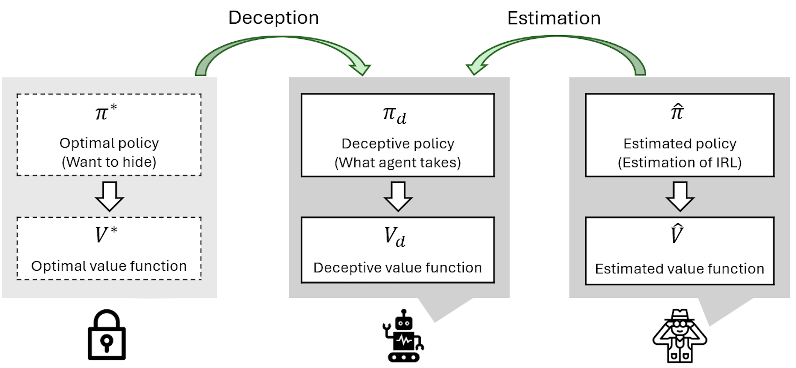
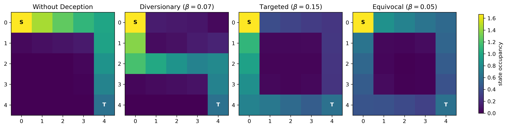

01 / Deceptive Policy Optimization with Performance Guarantees
Preprint · Under reviewDeceptive Sequential Decision-Making via Regularized Policy Optimization
Synthesizing policies that mislead reward inference, with explicit bounds on the accumulated reward sacrificed for deception.
Research question
How can an autonomous system anticipate and mislead an observer’s inference of its objectives while accounting for the resulting performance loss?
Approach
Three regularizers reshape a policy’s discounted state–action visitation frequencies (occupancy measures) in an MDP. A single parameter β sets the deception strength and can be chosen from problem-dependent bounds on the resulting performance loss.

Key findings
- Controllable deception. Occupancy-based regularization enables three distinct strategies: diverting inference, suggesting a chosen false objective, and making real and decoy objectives appear equally plausible.
- Bounded performance loss. Problem-dependent bounds relate regularization strength to accumulated reward loss, guiding policy design under a specified performance-loss budget.
Induce a different objective
Encourage deviation from nominal occupancy to induce a false inference, without specifying a target objective.
Suggest a chosen false goal
Pull occupancy toward a target occupancy measure that emphasizes decoy goals, suggesting a chosen false objective.
Make two goals plausible
Balance visits to real and decoy goals so both appear plausible.
Simulation studies
Moving target defenseHiding real agents among decoys · setup & results
The observer uses inferred rewards to identify real agents among decoys. Tests cover apprenticeship learning, maximum-entropy IRL, and deep maximum-entropy IRL; agent-likelihood estimates are averaged over 100 runs.
- System: 5 agents; 4 states (normal, targeted, exploited, breached), 3 actions (wait, defend, reset); 248,832 joint state–action pairs. All start normal; transitions follow Fig. 1.
- Rewards: R = 10; CT = 0.1, CE = 3, CB = 4; CD = 5, CR = 20. Decoy rewards = 1% of real-agent rewards; vreach = 7.
- Metric: accumulated discounted reward / non-deceptive optimal reward, for the same configuration.
| Strategy | Agent configuration | Parameter | Reward retained |
|---|---|---|---|
| Diversionary | 1 real + 4 decoys | β = 0.4 | 98.04% |
| Diversionary | 2 real + 3 decoys | β = 0.4 | 99.07% |
| Targeted | 1 real + 1 target decoy + 3 other decoys | β = 0.02 | 99.95% |
| Targeted | 1 real + 2 target decoys + 2 other decoys | β = 0.02 | 99.90% |
| Equivocal | 1 real + 1 target decoy + 3 other decoys | β = 50 | 99.99% |
| Equivocal | 1 real + 2 target decoys + 2 other decoys | β = 50 | 99.98% |
These are policy-value comparisons, not IRL success rates. The 100-run averages above apply to the separate observer-inference evaluations.
Stochastic gridworldDeceptive navigation · setup & results
- Task: one agent, 5 × 5 grid; upper-left → lower-right, then reset. Preferred route: right then down; decoy: down then right.
- Dynamics: intended direction with probability 0.9; otherwise uniformly random. γ = 0.9; vreach = 3.
- Rewards: 0.1 on the preferred path, 10.1 at the terminal state, −0.1 elsewhere.

| Strategy | Parameter | Reward retained |
|---|---|---|
| Diversionary | β = 0.07 | 84.61% |
| Targeted | β = 0.15 | 84.51% |
| Equivocal | β = 0.05 | 90.85% |
This example evaluates occupancy patterns, not IRL success. Its larger reward loss shows that deception costs depend on the environment.
Technical details
- Performance bounds
- Theorems 1–3 bound reward loss linearly in β for a fixed problem. Use these problem-dependent bounds to choose β from an allowable loss budget.
- Computation
- Targeted and equivocal synthesis are convex quadratic programs. Diversionary synthesis is generally NP-hard. Joint state–action spaces can grow exponentially with agent count.
- Inference result
- Proposition 1 links nearby occupancy measures to mutual regret for fixed linear reward models. Deep IRL results are empirical.
- Assumptions & limits
- Finite discounted MDP; known dynamics and rewards; visitation-based inference. Deception is not guaranteed against every observer. Adaptive adversaries remain future work.